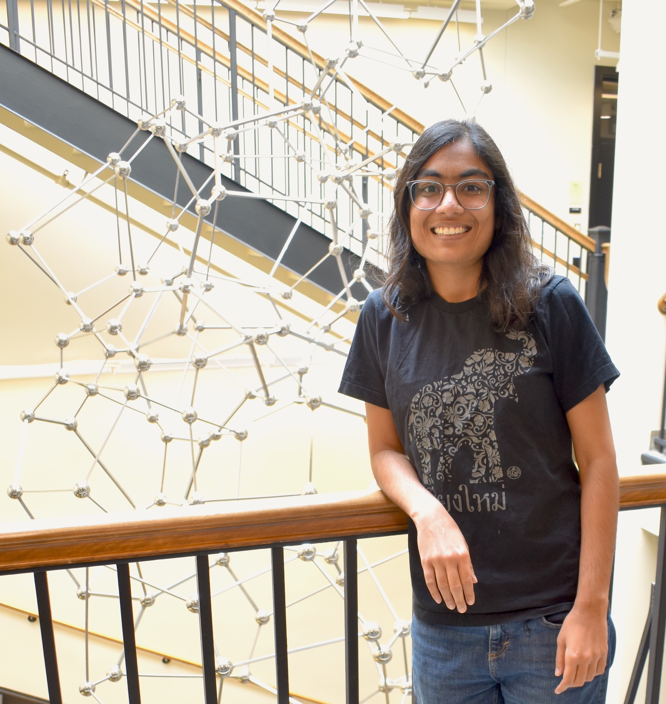

Mitali Bafna
mitalibafna at gmail dot com

I am a postdoc at MIT Math. Before this I did a one-year postdoc at CMU hosted by Prof. Aayush Jain and Prof. Pravesh Kothari. I graduated from Harvard in 2022 advised by Prof. Madhu Sudan and was an undergrad at IIT Madras.
My research is focussed on complexity theory and algorithms, specifically the complexity of combinatorial optimization problems, sum of squares algorithms and high dimensional expanders.
Publications
Rounding Large Independent Sets on Expanders.
with Tim Hsieh and Pravesh Kothari
Constant Degree Direct Product Testers with Small Soundness.
with Noam Lifshitz and Dor Minzer
FOCS 2024
Characterizing Direct Product Testing via Coboundary Expansion.
with Dor Minzer
STOC 2024
Solving Unique Games over Globally Hypercontractive Graphs.
with Dor Minzer
CCC 2024
Polynomial-Time Power-Sum Decomposition of Polynomials.
with Tim Hsieh, Pravesh Kothari and Jeff Xu
FOCS 2022
Hypercontractivity on High Dimensional Expanders: a Local-to-Global Approach for Higher Moments.
with Max Hopkins, Tali Kaufman and Shachar Lovett
STOC 2022
High Dimensional Expanders: Eigenstripping, Pseudorandomness, and Unique Games.
with Max Hopkins, Tali Kaufman and Shachar Lovett
SODA 2022
Playing Unique Games on Certified Small-Set Expanders.
with Boaz Barak, Pravesh Kothari, Tselil Schramm and David Steurer
STOC 2021
Optimal Fine-grained Hardness of Approximation of Linear Equations.
with Nikhil Vyas
ICALP 2021
Local decoding and testing of polynomials over grids
with Srikanth Srinivasan and Madhu Sudan
Random Structures and Algorithms (Journal)
Imperfect Gaps in Gap-ETH and PCPs.
with Nikhil Vyas
CCC 2019
Communication-Rounds Tradeoffs for Common Randomness and Secret Key Generation.
with Badih Ghazi, Noah Golowich and Madhu Sudan
SODA 2019
Thwarting Adversarial Examples: An L_0-Robust Sparse Fourier Transform.
with Jack Murtagh and Nikhil Vyas
NeurIPS 2018
The Price of Selection in Differential Privacy.
with Jonathan Ullman
COLT 2017
On the Sensitivity Conjecture for Read-k Formulas
with Satyanarayana V. Lokam, Sébastien Tavenas and Ameya Velingker
MFCS 2016
Manuscripts
Elementary analysis of isolated zeroes of a polynomial system.
with Madhu Sudan, Santhoshini Velusamy and David Xiang
An Exposition of Dinur-Khot-Kindler-Minzer-Safra’s Proof for the
2-to-2 Games Conjecture.
with Chi-Ning Chou and Zhao Song
Teaching
Information Theory in Computer Science (Harvard CS229r, Spring 2019)
Graduate Teaching Fellow, assistant to Madhu Sudan.